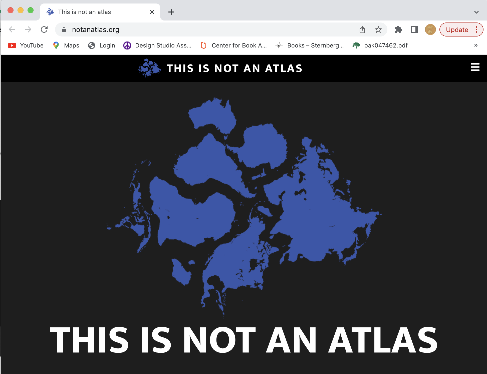

instead of focusing on how we can map the subject…[we could] focus on the ways in which mapping and the cartographic gaze have coded subjects and produced identities JOHN PICKLES 2004
INDEX
ABOUT
Reader
An Introduction to Critical Cartography
The Counter Map and the Territory
Digital Place-Making: Insights From Critical Cartography and GIS
Deep Mapping (2016) by Les Roberts
The mapping behind the movement: On recovering the critical cartographies of the African American Freedom Struggle Author links open overlay panel
Satellite Images Can Harm the Poorest Citizens
Extra-activism: counter-mapping and data justice
Farewell to maps Reformulating critical cartography in the digital age
Putting Indigenous Place-Names and Languages Back on Maps
Critical cartography 2.0: From “participatory mapping” to authored visualizations of power and people
Public Participation GIS and Local Political Context: Propositions and Research Directions
Mapping Black Ecologies
Digital Placemaking for Urban Regeneration: Identification of Historic Heritage Values in Taiwan and the Baltic States
Audiovisual Cartography: Established and New Multimedia Approaches to Represent Soundscapes
Feminist cartography and the United Nations Sustainable Development Goal on gender equality: Emotional responses to three thematic maps
Toolkits
+ Critical cartography

This Is Not An Atlas : An e-book and collection of critical mapping projects
Anti-Eviction Mapping Project : A mapping collective which uses data justice and GIS to resist capitalist structures
SLAB : USC PRICE's Spatial Analysis Lab narrates human interactions and urban relationships
+ Digital placemaking
Digital Deep Mapping researches the praxis of digital media, spatial representation, and social justice
Bristol + Bath Creative Research and Design: Prototypes of digital placemaking models using mapping and other technologies
+ How to map a memory
Workshop by Professor Lincoln Mullen in deep mapping and the types of data to consider
+ Cyberfeminist data
Mindy Seu's index of cyberfeminist text and resources
+ Black geographies
Lynching in America: Equal Justice Initiative researches the histories and impacts of lynching as racial terrorism
+ Extractive and climate data justice
Critical Cartography and Restoration Project: Project centered around climate resiliency
Maya Lin's project focused on environmental loss and memory mapping
MAPX is an open source database for environmental monitoring of extractive industries